Using the Event type variable, you can create a custom event in one widget and send it to another widget. For more information on how this works and how to configure the transfer of data from a child widget to a parent one, read the Send an event from a child widget to a parent one article.
Let’s take a look at how to use various options and additional variables when sending an event between two child widgets placed in one parent widget.
Suppose, the Transaction Report page has been created in the system. It contains two child widgets: Filter settings and Revenues table. When the user enters values in the filter fields, they see the search results in the widget with the table according to the entered parameters. Thus, you can view the found items immediately after entering a value in the filter field.
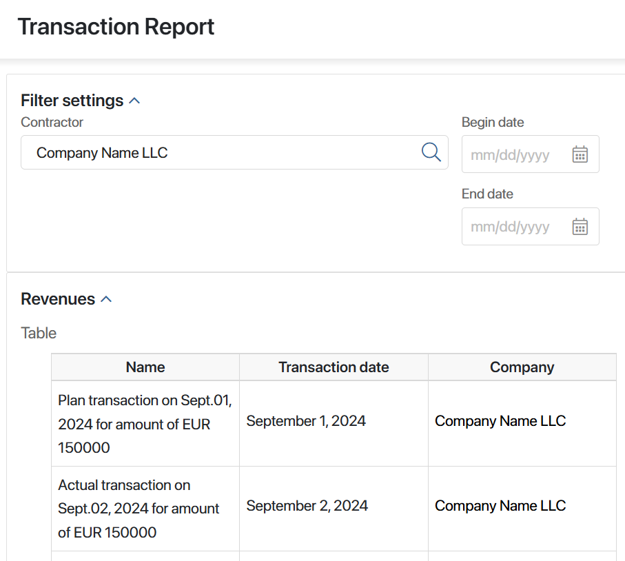
Let's take a closer look at how to configure such data transfer.
Step 1: Create and configure the Filter settings custom widget
Start the setup by creating a widget that contains fields with filtering parameters. In its settings, you need to:
- Add properties for searching.
- Create a variable of the Event type and bind it with the script for launching item search in the parent widget (the Transaction Report page).
- In the settings of the properties created for searching, specify the script in the On value change handler option. Thus, every time the user enters a value in the field, an event is sent to the parent widget together with the specified filtering data.
Follow these steps.
- Create the Filter settings widget with the following variables:
- Contractor. This is a variable of the App type. In this field, the user specifies the name of the required contractor to search for data by its name.
- Begin date and End date. These are variables of the Date/time type. Here the user specifies the period of transactions.
- Filter change. This is a service variable of the Event type. You need it for the script that records the filter usage event that occurred in the widget.
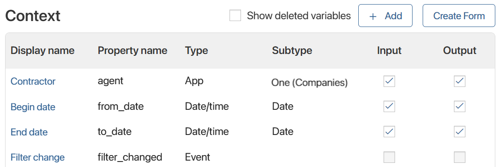
- On the Template tab, place the Panel with Header widget and name it Filter settings. In this panel, add the Columns widget, and in the columns, add the Contractor, Begin date, and End date properties.
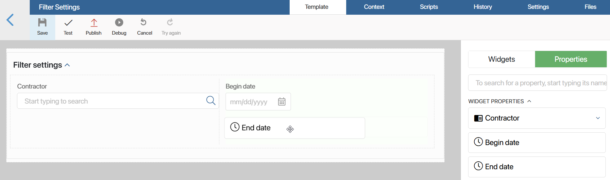
- On the modeling canvas, select the Contractor property and click the gear icon. In the window that opens, go to the Events tab. To the right of the On value change handler option, click the Create button, enter the setFilters function name, select Save, and then click Open.
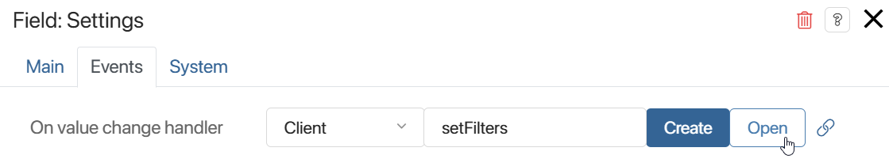
To send an event together with the filter data when the user enters a value in this field, specify the following function on the Scripts tab that opens:
async function setFilters(): Promise<void> {
const filterData = {
agent: Context.data.agent,
from_date: Context.data.from_date,
to_date: Context.data.to_date,
};
Context.data.filter_changed?.emit(filterData);
}
- Specify the same function for the Begin date and End date properties. To do this, in their settings, on the Events tab, to the right of the On value change handler option, click the empty field and select setFilters.
- Save and publish the Filter settings widget.
Now you can use it in other widgets as a child widget to filter app items by specified parameters.
Step 2: Create and configure the custom Revenues table widget
Now create the second widget to display the filter results in a table. In the widget settings, configure the settings to:
- Trigger a search for matching items when the value in the filters changes.
- Display the search result in a table.
- Create the Revenues table widget with the following variables:
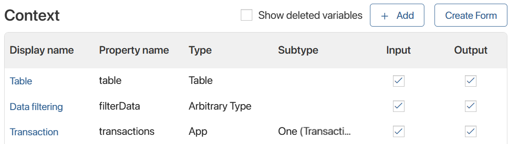
- Table. This is a variable of the Table type. Set up its columns by specifying the required app properties. Here the user sees the results of filtering by the entered values. Read how to set up table columns in the Table settings article.
- Transaction. This is a variable of the App type with the One subtype. Select the Transactions registry app. This is a service variable. You need it to execute the script specified below. It is used to search for app items by the specified filters.
- Data filtering. This is a service variable of the Arbitrary type. It is used to transfer data from the first Filter settings widget to the second Revenues table widget.
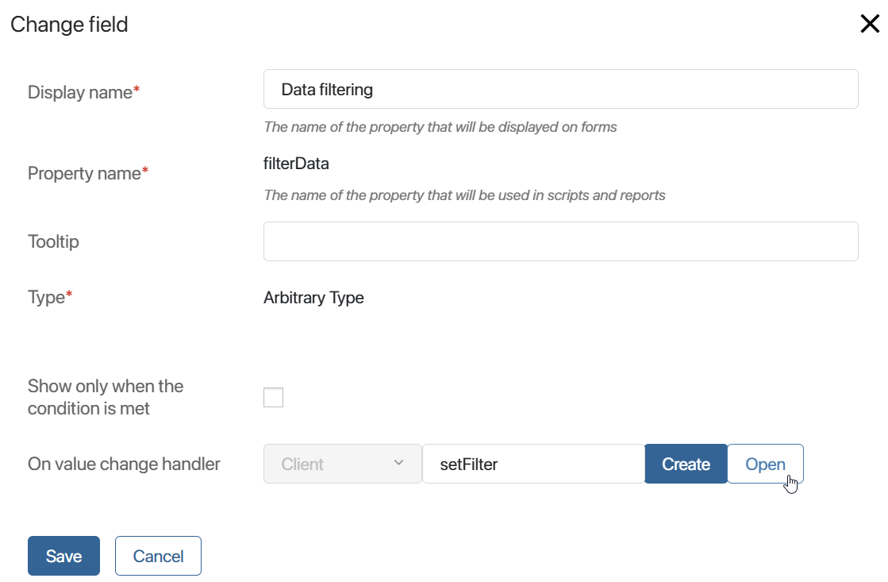
When creating the Data filtering variable, in the On value change handler option, specify a script that will show the filtered data in the table.
Script for filling the table with filtered data
interface FilterData {
|
- On the Template tab, place the Panel with Header widget and name it Revenues. In this panel, add the Table property created earlier.
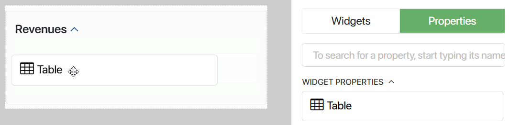
- Save and publish the Revenues table widget.
Now you can use it in other widgets as a child widget to show the filtering results for transactions in a table.
Step 3: Add widgets to the page and configure data transfer between them
Now, add the Filter settings and Revenues table widgets to the created Transaction Report page. The page will become a parent widget for them. The page records the filtering data from the first widget and transfers it to the second one.
- Open the settings of the Transaction Report page and go to the interface designer.
- On the Context tab, create the Filter data variable of the Arbitrary type. It is needed to:
- Record the filtering data received together with the event from the Filter settings widget.
- Link the page context to the context of the Revenues table widget to display the found items in the table.
- Go to the Template tab and place the previously created widgets on the canvas:
- Filter settings
- Revenues table
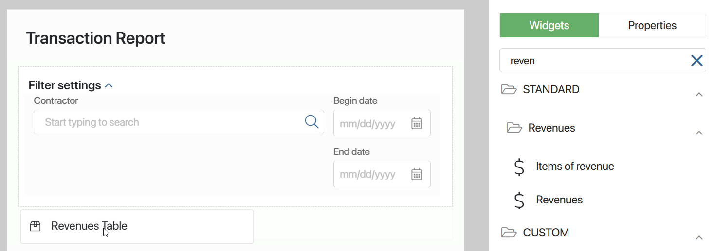
- Open the settings of the Filter settings widget and go to the Events tab.
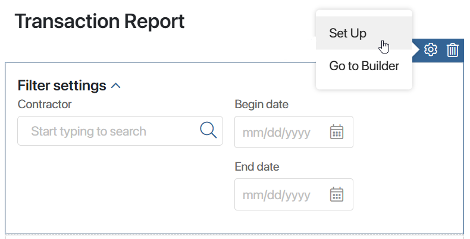
On this tab, you can see the variable of the Event type created earlier in the widget builder. Link the script to it. This script helps you record the filtering data in the page context when the widget sends Filter change event.
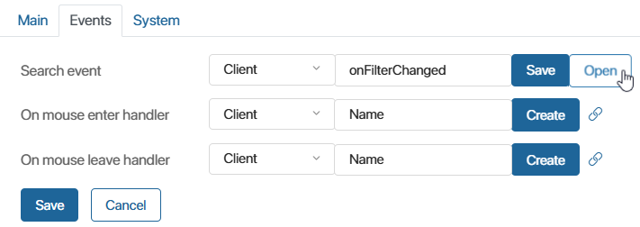
To link the script, select Create, specify the function name: onFilterChanged, click Save, and then select Open. As a result, the asynchronous function will be created on the Scripts tab. Add the following script to this function:
// Launch the script if the filter value is changed
async function onFilterChanged(filterData: FilterData): Promise<void> {
Context.data.filterData = filterData;
}
// Specify which values can be used in the function
interface FilterData {
agent: TApplication<Application$_clients$_companies$Data, any, Application$_clients$_companies$Processes> | undefined;
from_date: TDate | undefined;
to_date: TDate | undefined;
}
- Go back to the Template tab and open the settings of the Revenues table widget. On the Main tab, you see its variables. To see the items according to the filtering data in the table, you should send these data to the context of the table widget. To do it, link the Filter data variable of the arbitrary type you’ve created earlier in the page context.
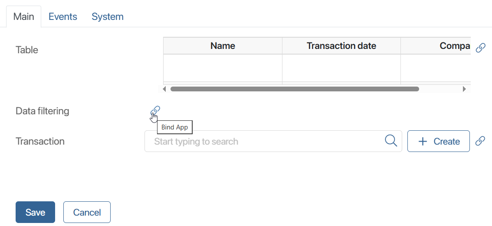
Save settings of the Revenues table widget.
- Save and publish the Transaction Report page.
Now, when entering a value in one of the filter fields, you see the data of the items from the Transactions registry app.